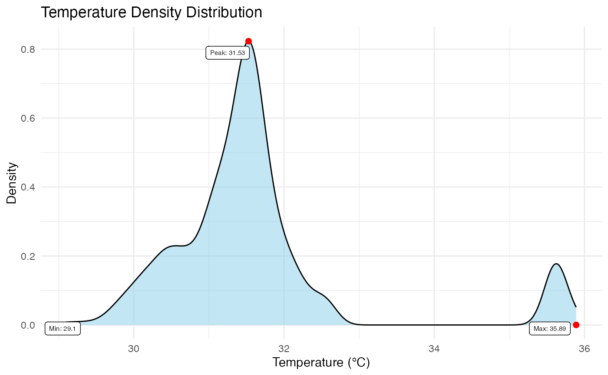

Generates a probability density plot of the temperature values within the image. This visualization is critical for assessing the homogeneity of the subject's temperature and identifying potential artifacts (e.g., bimodal distributions often indicate poor background removal).
Usage
plot_thermal_density(
img_obj,
use_processed = TRUE,
show_peak = TRUE,
show_max = TRUE,
show_min = TRUE,
digits = 2,
color = "skyblue",
point_size = 2,
point_color = "red",
point_label_color = "black",
point_label_size = 2
)Arguments
- img_obj
A 'BioThermR' object.
- use_processed
Logical. If
TRUE(default), uses the 'processed' matrix (masked data). IfFALSE, uses the 'raw' matrix.- show_peak
Logical. If
TRUE, highlights and labels the peak density value (Mode). Default isTRUE.- show_max
Logical. If
TRUE, highlights and labels the maximum temperature value. Default isTRUE.- show_min
Logical. If
TRUE, highlights and labels the minimum temperature value. Default isTRUE.- digits
Integer. Number of decimal places to round the labels to. Default is 2.
- color
String. Fill color for the density area curve. Default is "skyblue".
- point_size
Numeric. Size of the points marking Peak/Min/Max. Default is 2.
- point_color
String. Color of the points marking Peak/Min/Max. Default is "red".
- point_label_color
String. Color of the text labels. Default is "black".
- point_label_size
Numeric. Size of the text labels. Default is 2.
Details
The function computes the kernel density estimate of the valid pixels (ignoring NAs). It can optionally annotate key statistical landmarks:
Peak: The mode of the distribution (most frequent temperature).
Max/Min: The hottest and coldest points in the ROI.
Text labels are automatically repelled using 'ggrepel' to ensure they do not overlap.
Examples
# \donttest{
# Load raw data
img_obj <- system.file("extdata", "C05.raw", package = "BioThermR")
img <- read_thermal_raw(img_obj)
# Apply automated segmentation
img <- roi_segment_ebimage(img, keep_largest = TRUE)
#> Auto-Segmentation: Kept largest object ( 401 pixels )
# Density plot
plot_thermal_density(img)

# }